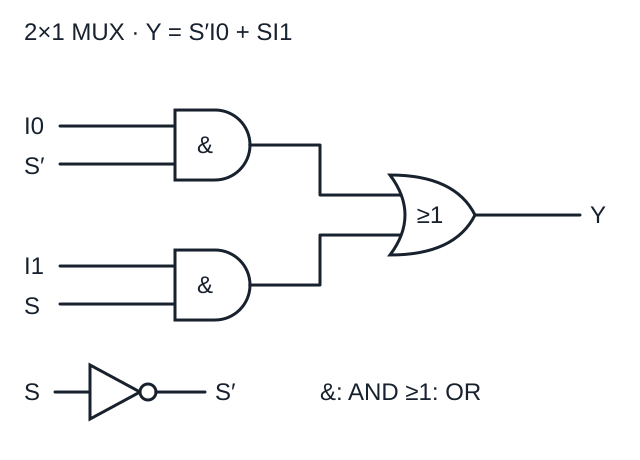

실험 4 · Multiplexer & Demultiplexer — 경로를 고르는 회로를 배워요 · 실험 설명
이번 학기 교안 기준
실험 이해
왜 이 회로를 쓰는지 먼저 알아봐요
이해를 위한 예시 · 회로가 해결하는 문제
이해를 위한 예시로, 두 신호 중 하나를 골라 같은 출력으로 보내고 싶다고 해 봐요. 보충으로, 일반적인 논리 출력 두 개를 그냥 연결하면 서로 다른 값을 내보낼 때 충돌할 수 있어요. 어느 신호를 통과시킬지 정하는 회로가 필요해요.
MUX(멀티플렉서)는 여러 입력 중 하나를 골라 한 출력으로 보내요. 반대로 DMUX(디멀티플렉서)는 한 입력을 여러 출력 중 선택한 곳으로 보내요. 데이터선은 보낼 값을 담고, 선택선은 그 값이 지나갈 경로를 골라요.
입력 I0=0, I1=1인 2×1 MUX에서 선택선 S=0이면 출력은 I0의 값 0, S=1이면 I1의 값 1이에요. DMUX에서도 선택선이 목적지를 고를 뿐, 데이터가 0이면 선택된 출력도 0이에요. 여기서는 활성 High 출력의 이상적인 DMUX를 생각해요.
이번 실험에서는 4×1 MUX와 1×4 DMUX의 선택선과 데이터 입력을 바꾸고 출력을 확인해요. MUX에서는 고른 입력의 값이 전달되는지, DMUX에서는 데이터가 선택한 출력에만 전달되는지 관찰해요. 4×1 MUX는 동작 허가 신호인 enable의 활성 조건도 함께 확인해요.
이 순서로 읽어 봐요
신호와 게이트부터 시작해서 2×1 MUX, 4×1 MUX와 enable, DMUX, 디코더, tri-state를 차례로 살펴봐요. 마지막에는 실험에서 무엇을 바꾸고 관찰할지 정리해요.
이번 수행 범위는 1-1과 2-1이에요. 1-2와 2-2는 보충으로 다뤄요. 수행하지 않는다고 시험에도 나오지 않는다는 뜻은 아니에요.
예상값과 측정값을 구분해요
여기서 계산한 출력은 이상적인 회로의 예상값이에요. 실제 측정값은 실험에서 따로 기록해야 해요. 원문 표기와 회로 계산이 어긋난 부분은 해당 설명에서 함께 확인해요.
외울 규칙
MUX → 여러 입력 중 하나를 한 출력으로 보내요
DMUX → 한 데이터를 선택 출력으로 보내요
선택선 · 데이터선 → 경로를 정해요 · 값을 정해요
수행 → 1-1·2-1 (1-2·2-2는 보충)
헷갈리지 마요
여기서는 활성 High 이상 DMUX를 써요.
계산 예상값과 실제 측정값을 구분해요.
1-2·2-2가 보충이라는 것은 시험 제외를 뜻하지 않아요.
0·1, 게이트와 진리표를 다시 읽어요
전압을 0과 1로 읽어요
디지털 회로는 입력 전압을 Low(0)와 High(1)로 나눠 읽어요. 이번 5V 전원 실험에서는 GND와 +5V를 입력으로 써요. 중간 전압까지 모두 유효한 0이나 1인 건 아니에요.
기호부터 같이 읽어 봐요
A·B는 AND예요. 두 입력이 모두 1일 때만 출력이 1이에요. A+B는 OR예요. 하나라도 1이면 출력이 1이에요. A′나 윗줄은 NOT으로, 0과 1을 뒤집어요.
여기의 +는 숫자를 더하는 기호가 아니에요. 그래서 부울식에서는 1+1=1이에요. NAND는 AND의 결과를 한 번 뒤집어요.
입력
출력
A
B
A·B
A+B
(A·B)′
0
0
0
0
1
0
1
0
1
1
1
0
0
1
1
1
1
1
1
0
진리표의 한 행은 입력을 동시에 정했을 때의 출력을 보여 줘요. 입력이 3개면 2³=8가지 조합을 확인해요. S1S0는 두 비트 주소예요. 00, 01, 10, 11은 각각 0, 1, 2, 3을 뜻하고 S1이 큰 자리예요.
X와 Z는 다른 뜻이에요
입력 X를 don’t-care로 썼다면, 그 입력이 0이든 1이든 해당 행의 결론이 같다는 뜻이에요. 알 수 없는 값을 뜻하는 X와 구분해요.
Z는 high impedance예요. 출력이 선을 적극적으로 구동하지 않는 상태라서 논리 0과 달라요. 출력칸에 X가 있다고 곧바로 Z라고 판단하지 않아요.
출력 1은 신호의 논리값이에요. LED가 켜지는지는 결선 방향에도 달려 있어요.
외울 규칙
AND → 둘 다 1일 때 1
OR → 하나라도 1일 때 1
NOT → 반전해요
S1S0 → S1이 큰 자리인 주소
입력 X(don’t-care) → 결론에 무관한 입력
Z → 논리 0이 아닌 구동 중단
헷갈리지 마요
+는 산술 덧셈이 아닌 OR예요.
입력 X(don’t-care)와 미정 X를 구분해요.
LED 점등은 결선에 달려 있어요.
중간 전압은 모두 유효한 0·1이 아니에요.
2×1 MUX의 경로를 골라 봐요
두 문 중 하나만 열어요
S가 0이면 I0 쪽 문을, 1이면 I1 쪽 문을 열어요. 선택된 입력이 0이면 출력도 0이에요. 경로를 골랐다고 출력이 항상 1이 되는 건 아니에요.
식과 회로를 함께 만들어요
$$Y=\overline{S}I_0+SI_1$$
S를 NOT에 넣어 S′를 만들어요. 첫 AND에는 S′와 I0, 둘째 AND에는 S와 I1을 연결해요. 두 AND의 출력을 OR로 합치면 Y가 돼요.

선택선은 경로를 고르고, 데이터 입력은 출력값을 정해요.
S=0이면 S′=1이라서 첫 항은 I0, 둘째 항은 0이에요. S=1이면 반대로 둘째 항의 I1만 남아요.
선택 입력
데이터 입력
출력
S
I0
I1
Y
0
0
0
0
0
0
1
0
0
1
0
1
0
1
1
1
1
0
0
0
1
0
1
1
1
1
0
0
1
1
1
1
S=1, I0=1, I1=0을 넣어 볼게요. 첫 항은 0·1=0, 둘째 항은 1·0=0이라서 Y=0이에요. 선택되지 않은 I0의 값은 출력에 영향을 주지 않아요.
직접 바꿔 봐요
S=0이면 Y=I0, S=1이면 Y=I1이에요. 위 진리표에서 모든 입력 조합을 확인할 수 있어요.
한 단계만 풀어 봐요
S=0, I0=1, I1=0일 때 두 AND의 출력을 먼저 구해 봐요.
힌트
S′=1부터 넣어 봐요.
연습 답
첫 AND는 1, 둘째 AND는 0이에요. 두 값을 OR로 합치면 Y=1이에요. Y=I0와도 일치해요.
외울 규칙
2:1 MUX → Y=S′I0+SI1
게이트 → NOT 1개, AND 2개, OR 1개
헷갈리지 마요
선택하지 않은 데이터는 출력에 영향을 주지 않아요.
4×1 MUX와 활성 Low enable을 배워요
두 비트로 네 경로를 골라요
주소 S1S0가 10이면 세 번째 입력 I2를 골라요. 네 데이터를 모두 더하는 게 아니라 한 경로만 열어요. E는 회로 전체의 동작을 허가하는 제어 신호예요.